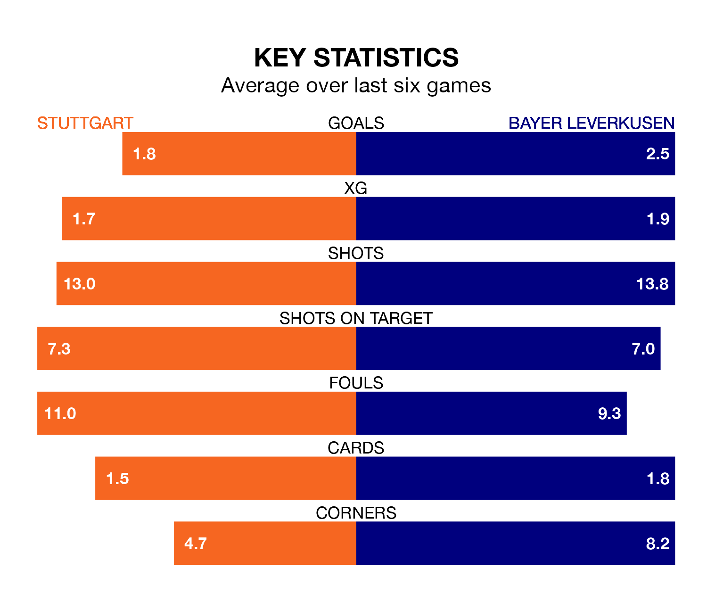

Two of the Bundesliga's top sides face each other at Mercedes-Benz-Arena in Sunday's early kick-off, when third-placed Stuttgart host table-topping Bayer Leverkusen.
Stuttgart have picked up 10 wins from 13 games so far this season, and sit five points below the visitors going into the 2.30pm match.
Bayer Leverkusen, meanwhile, have won 11 and drawn two, picking up 35 points.
With 38 goals in 13 games so far this season, Bayer are the league's second-highest scorers with 2.9 goals per game. And they are conceding fewer than average, letting in 11 goals at a rate of 0.8 per game.
Stuttgart are also above average scorers, with 2.5 goals per game, compared to a league average of 1.7. They have conceded 1.2 goals per game.
In Alexander Nübel, the home team can rely on one of the league's safest pair of hands. He has kept five clean sheets in his 13 appearances this season, and no 'keeper has prevented the opposition scoring more often in the Bundesliga.
In Bayer Leverkusen's net, Lukáš Hrádecký also has five clean sheets in 13 games.
Stuttgart are in reasonable form in the Bundesliga, with four wins and two losses from their last six games.
With five wins and a draw over that period, the visitors' form is better – they have taken 16 points from 18, compared to Stuttgart's 12.
In the last 10 years, Stuttgart and Bayer have played each other on 16 occasions. Stuttgart won one of them, Bayer 12, and they drew three times.
On average, Stuttgart scored 1.0 goal and Bayer Leverkusen 2.4 in those matches.
Their last meeting was on May 14, when they played out a 1-1 draw.
Stuttgart's last match was on December 2, a 2-0 win against Werder Bremen, with Deniz Undav and Sehrou Guirassy getting the goals for Stuttgart.
Bayer drew 1-1 with Borussia Dortmund last time out, on Sunday, with Victor Boniface on the scoresheet.
